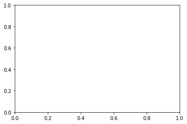

TP 1 Sondage Atmosphérique
Table of Contents
- 1. Faire du calcul numérique (à une dimension)
- 2. Sondage
- 3. Python Numerical Methods (Berkeley)
- 4. TEST Casamayou
1 Faire du calcul numérique (à une dimension)
1.1 Environnement de calcul : les modules python
Le module numpy regroupe fonctions constantes et méthodes utiles aux traitement numériques réalisés dans ce TP. Des fonctions avancées de traitement mathématiques et graphiques pourront être utilisés via les modules matplotlib et scipy
Calcul vectoriel : consiste à réaliser des opérations vectorielles ou matricielles plut que des boucles (for, while) classiquement utilisées pour les listes. Ces opérations ont été programmées dans des langages de programmations plus rapides (C pour numpy et C et Fortran pour scipy)
import numpy as np L = [] for i in range(100000000): L.append(i) a = np.array(L)
import numpy as np a = np.arange(100000000)
Les ndarray et les fonctions numpy permettent d'accélérer les calculs et sont très utiles dans le contexte de traitement de gros volumes de données.
1.1.1 remarque timer
import timeit timeit.timeit('"-".join(str(n) for n in range(100))', number=10000)
0.18152295495383441
1.2 Tracés de graphiques
import matplotlib.pyplot as plt
Le sous module pyplot et sa fonction principale plot utilisent une syntaxe proche de celle utilisée par les logiciels de calcul numérique courant MATLAB/Scilab
Voici un petit exemple pour rappel :
style_lign = ['solid', 'dashed', 'dashdot', 'dotted'] style_mark = [ ' ', '.', '*', 'o']
k = [ 1,2,5,10 ] for i in range(len(k)): x = [] y = [] for j in range(100): x.append(j/100) y.append(np.sin(k[i] * x[j])) plt.plot(x,y,linestyle = style_lign[i], marker=style_mark[i], label = 'f(x)=sin('+ str(k[i]) + 'x)') plt.xlabel('x') plt.ylabel('y') plt.title('Exemple de tracé de liste') plt.legend() plt.grid() plt.show()

1.3 Résolution numérique d'équations
1.4 Résolution numérique d'équations différentielles
1.4.1 méthode d'Euler (ordre 1)
1.4.2 Méthode d'Euler (ordre 2)
1.5 Applications
1.5.1 tracé d'un courbe paramétrée
1.5.2 mise en oeuvre de la méthode d'Euler
2 Sondage
2.1 Imports Constantes et Données
import numpy as np import matplotlib import matplotlib.pyplot as plt #import json #import csv M = 29.0e-3 R = 8.31 P0 = 1.0e5 g0 = 9.8 RT = 6.4e3 pi = np.pi zexp = np.array([0.0, 5.0, 10.0, 12.0, 20.0, 25.0, 30.0, 35.0, 40.0, 45.0, 48.0, 52.0, 55.0, 60.0, 65.0, 70.0, 75.0, 80.0, 84.0, 92.0, 95.0, 100.0]) Texp = np.array([15.0, -18.0, -49.0, -56.0, -56.0, -51.0, -46.0, -37.0, -22.0, -8.0, -2.0, -2.0, -7.0, -17.0, -33.0, -54.0, -65.0, -79.0, -86.0, -86.0, -81.0, -72.0])
2.2 Interpolation
def T(z,unite): z_km = z / 1000 #conversion alpha = 1 # facteur de conversion if unite == 'C': alpha = 0 i = 0 while z_km > zexp[i+1]: # recherche de l'indice i i = i + 1 rate = ( Texp[i+1] - Texp[i] ) / ( zexp[i+1] - zexp[i] ) temperature = alpha*273 + Texp[i] + rate * (z_km - zexp[i]) return temperature
2.3 Temperature
N = 10000 zmax = 100.0e3 dz = zmax / (N-1) print(N, zmax, dz) zatm = np.array([ k * dz for k in range(N) ]) Tatm = np.array([ T(zatm[k], 'C') for k in range(N) ]) TatmK = np.array([ T(zatm[k], 'K') for k in range(N) ]) gatm = np.array([ g(zatm[k]) for k in range(N)])
10000 100000.0 10.001000100010002
NameErrorTraceback (most recent call last) <ipython-input-11-2c84e93431ff> in <module> 6 Tatm = np.array([ T(zatm[k], 'C') for k in range(N) ]) 7 TatmK = np.array([ T(zatm[k], 'K') for k in range(N) ]) -—> 8 gatm = np.array([ g(zatm[k]) for k in range(N)])
<ipython-input-11-2c84e93431ff> in <listcomp>(.0) 6 Tatm = np.array([ T(zatm[k], 'C') for k in range(N) ]) 7 TatmK = np.array([ T(zatm[k], 'K') for k in range(N) ]) -—> 8 gatm = np.array([ g(zatm[k]) for k in range(N)])
NameError: name 'g' is not defined
2.4 Champ de pesanteur
def g(z): return g0 * RT**2 / (RT + z)**2 return g0
fig, ax = plt.subplots() ax.plot( TatmK,zatm) ax.plot( Tatm,zatm) plt.savefig("ffffffffff")

2.5 Pression
Patm = [P0] gatm = [g0] deltap = 0 gradient = 0 for k in range(N-1): gradient = - M * g(zatm[k]) / (R * TatmK[k] ) deltap = gradient * dz * Patm[k] Patm.append( Patm[k] + deltap ) # gatm.append( gatm[k] ) Patm = np.array(Patm) print(M,R,P0,g0,RT)
0.029 8.31 100000.0 9.8 6400.0
plt.plot(Patm,np.log(zatm))
<ipython-input-27-fb3e7a7d93ad>:1: RuntimeWarning: divide by zero encountered in log
plt.plot(Patm,np.log(zatm))

def masse_atm(z): masse = 0 k = 0 Cte = 4*pi*M/R while zatm[k] < z: dm = Cte * dz * (RT + z)**2 * Patm[k] / T(zatm[k],'K') masse = masse + dm k = k+1 return masse
mtot = masse_atm(100e3) print(mtot)
2.2013954250074244e+16
3 Python Numerical Methods (Berkeley)
import numpy as np import matplotlib.pyplot as plt plt.style.use('seaborn-poster') %matplotlib inline # Define parameters f = lambda t, s: np.exp(-t) # ODE h = 0.1 # Step size t = np.arange(0, 1 + h, h) # Numerical grid s0 = -1 # Initial Condition # Explicit Euler Method s = np.zeros(len(t)) s[0] = s0 for i in range(0, len(t) - 1): s[i + 1] = s[i] + h*f(t[i], s[i]) plt.figure(figsize = (12, 8)) plt.plot(t, s, 'bo--', label='Approximate') plt.plot(t, -np.exp(-t), 'g', label='Exact') plt.title('Approximate and Exact Solution \ for Simple ODE') plt.xlabel('t') plt.ylabel('f(t)') plt.grid() plt.legend(loc='lower right') plt.show()
<ipython-input-14-53e864c3c24f>:4: MatplotlibDeprecationWarning: The seaborn styles shipped by Matplotlib are deprecated since 3.6, as they no longer correspond to the styles shipped by seaborn. However, they will remain available as 'seaborn-v0_8-<style>'. Alternatively, directly use the seaborn API instead.
plt.style.use('seaborn-poster')

import numpy as np from numpy.linalg import inv import matplotlib.pyplot as plt plt.style.use('seaborn-poster') %matplotlib inline
<ipython-input-15-bcef546ae31a>:5: MatplotlibDeprecationWarning: The seaborn styles shipped by Matplotlib are deprecated since 3.6, as they no longer correspond to the styles shipped by seaborn. However, they will remain available as 'seaborn-v0_8-<style>'. Alternatively, directly use the seaborn API instead. plt.style.use('seaborn-poster')
# define step size h = 0.1 # define numerical grid t = np.arange(0, 5.1, h) # oscillation freq. of pendulum w = 4 s0 = np.array([[1], [0]]) m_e = np.array([[1, h], [-w**2*h, 1]]) m_i = inv(np.array([[1, -h], [w**2*h, 1]])) m_t = np.dot(inv(np.array([[1, -h/2], [w**2*h/2,1]])), np.array( [[1,h/2], [-w**2*h/2, 1]])) s_e = np.zeros((len(t), 2)) s_i = np.zeros((len(t), 2)) s_t = np.zeros((len(t), 2)) # do integrations s_e[0, :] = s0.T s_i[0, :] = s0.T s_t[0, :] = s0.T for j in range(0, len(t)-1): s_e[j+1, :] = np.dot(m_e,s_e[j, :]) s_i[j+1, :] = np.dot(m_i,s_i[j, :]) s_t[j+1, :] = np.dot(m_t,s_t[j, :]) plt.figure(figsize = (12, 8)) plt.plot(t,s_e[:,0],'b-') plt.plot(t,s_i[:,0],'g:') plt.plot(t,s_t[:,0],'r--') plt.plot(t, np.cos(w*t), 'k') plt.ylim([-3, 3]) plt.xlabel('t') plt.ylabel('$\Theta (t)$') plt.legend(['Explicit', 'Implicit', \ 'Trapezoidal', 'Exact']) plt.show()
findfont: Font family ['STIXGeneral'] not found. Falling back to DejaVu Sans.
findfont: Font family ['STIXGeneral'] not found. Falling back to DejaVu Sans.
findfont: Font family ['STIXGeneral'] not found. Falling back to DejaVu Sans.
findfont: Font family ['STIXNonUnicode'] not found. Falling back to DejaVu Sans.
findfont: Font family ['STIXNonUnicode'] not found. Falling back to DejaVu Sans.
findfont: Font family ['STIXNonUnicode'] not found. Falling back to DejaVu Sans.
findfont: Font family ['STIXSizeOneSym'] not found. Falling back to DejaVu Sans.
findfont: Font family ['STIXSizeTwoSym'] not found. Falling back to DejaVu Sans.
findfont: Font family ['STIXSizeThreeSym'] not found. Falling back to DejaVu Sans.
findfont: Font family ['STIXSizeFourSym'] not found. Falling back to DejaVu Sans.
findfont: Font family ['STIXSizeFiveSym'] not found. Falling back to DejaVu Sans.
findfont: Font family ['cmsy10'] not found. Falling back to DejaVu Sans.
findfont: Font family ['cmr10'] not found. Falling back to DejaVu Sans.
findfont: Font family ['cmtt10'] not found. Falling back to DejaVu Sans.
findfont: Font family ['cmmi10'] not found. Falling back to DejaVu Sans.
findfont: Font family ['cmb10'] not found. Falling back to DejaVu Sans.
findfont: Font family ['cmss10'] not found. Falling back to DejaVu Sans.
findfont: Font family ['cmex10'] not found. Falling back to DejaVu Sans.
findfont: Font family ['DejaVu Sans Display'] not found. Falling back to DejaVu Sans.

4 TEST Casamayou
import os def nrange(a, b, numpoints): """Renvoie une subdivision de [a, b] à N+1 points.""" pas = (b - a) / numpoints return (a + i * pas for i in range(numpoints + 1)) def srange(a, b, pas): """Renvoie une subdivision de [a, b] avec un pas donné.""" numpoints = int((b - a) / pas) return (a + i * pas for i in range(numpoints + 1)) def preambule(nomFichier, boite, zoom, delta): """ Écrit le préambule du fichier EPS.""" cadre = [x * zoom * delta for x in boite] s_debut = ("%!PS-Adobe-2.0 EPSF-2.0\n" "%%BoundingBox: {0[0]:.1f} {0[1]:.1f} {0[2]:.1f} {0[3]:.1f}\n" "{1} {1} scale\n").format(cadre, zoom) with open(nomFichier + ".eps", 'w') as f: f.write(s_debut) def fin(nomFichier): """ Cloture le fichier EPS.""" s_fin = "\nshowpage\n" with open(nomFichier + ".eps", 'a') as f: f.write(s_fin) def ajouteCourbe(nomFichier, liste, boite, zoom, epaisseurTrait, rgb): """Ajoute une courbe donnée sous forme de liste.""" with open(nomFichier + ".eps", 'a') as f: f.write("\nnewpath\n") for i, point in enumerate(liste): if i == 0: f.write(" {0[0]: .4f} {0[1]: .4f} ".format(point)) f.write("moveto\n") elif (boite[0] <= point[0] <= boite[2] and boite[1] <= point[1] <= boite[3]): f.write(" {0[0]: .4f} {0[1]: .4f} ".format(point)) f.write("lineto\n") f.write("{1} {0} div setlinewidth\n" "{2[0]} {2[1]} {2[2]} setrgbcolor\n" "stroke\n".format(zoom, epaisseurTrait, rgb)) def affiche(nomFichier): """Affiche le graphique via ghostview.""" os.system("gv {0}.eps &".format(nomFichier)) if __name__ == "__main__": from math import pi, cos, sin, floor N, a, b = 1000, 0, 1 + floor(38 * pi) nomFichier, zoom, epaisseurTrait = "polar", 100, 0.4 rgb = (0, 0, 1) # tracé en bleu # rgb = (0.2, 0.2, 0.2) # tracé en gris boite = [-1.5, -1.5, 1.5, 1.5] # xmin , ymin, xmax, ymax # Fonction définissant la courbe polaire def f(theta): return 1 + cos(theta*20/19) / 3 # Liste de points de la courbe liste = ([f(theta) * cos(theta), f(theta) * sin(theta)] for theta in nrange(a, b, N)) # Création du fichier EPS preambule(nomFichier, boite, zoom, 1.1) ajouteCourbe(nomFichier, liste, boite, zoom, epaisseurTrait, rgb) fin(nomFichier) affiche(nomFichier)
import matplotlib.pyplot as plt import numpy as np x = np.linspace(-15, 15, 150) y = np.sin(x) / x plt.plot(x, y) plt.show()

4.1 test
import turtle as tt # Set the background color as black, # pensize as 2 and speed of drawing # curve as 10(relative) tt.bgcolor('grey') tt.pensize(1) tt.speed(60) # Iterate six times in total for i in range(6): # Choose your color combination for color in ('magenta','yellow'): tt.color(color) # Draw a circle of chosen size, 100 here for j in range(100): tt.circle(j*4) # Move 10 pixels left to draw another circle tt.left(10) # Hide the cursor(or turtle) which drew the circle tt.hideturtle()
AttributeErrorTraceback (most recent call last) <ipython-input-1-87aeeb7a6e43> in <module> 14 # Draw a circle of chosen size, 100 here 15 for j in range(100): —> 16 tt.square(j*4) 17 # Move 10 pixels left to draw another circle 18 tt.left(10)
AttributeError: module 'turtle' has no attribute 'square'
import turtle as tt tt.bgcolor('grey') tt.pensize(1) tt.speed(60) shape("circle") shapesize(5,4,1) fillcolor("white") tt.circle()
NameErrorTraceback (most recent call last) <ipython-input-1-743e3db4db16> in <module> 3 tt.pensize(1) 4 tt.speed(60) -—> 5 shape("circle") 6 shapesize(5,4,1) 7 fillcolor("white")
NameError: name 'shape' is not defined
import numpy as np from matplotlib import pyplot as plt from math import pi u=1. #x-position of the center v=0.5 #y-position of the center a=2. #radius on the x-axis b=1.5 #radius on the y-axis t = np.linspace(0, 2*pi, 100) plt.plot( u+a*np.cos(t) , v+b*np.sin(t) ) plt.grid(color='lightgray',linestyle='--') plt.show()

import numpy as np from matplotlib import pyplot as plt from math import pi, cos, sin u=1. #x-position of the center v=0.5 #y-position of the center a=2. #radius on the x-axis b=1.5 #radius on the y-axis t_rot=pi/2 #rotation angle t = np.linspace(0, 2*pi, 100) Ell = np.array([a*np.cos(t) , b*np.sin(t)]) #u,v removed to keep the same center location R_rot = np.array([[cos(t_rot) , -sin(t_rot)],[sin(t_rot) , cos(t_rot)]]) #2-D rotation matrix Ell_rot = np.zeros((2,Ell.shape[1])) for i in range(Ell.shape[1]): Ell_rot[:,i] = np.dot(R_rot,Ell[:,i]) plt.plot( u+Ell[0,:] , v+Ell[1,:] ) #initial ellipse plt.plot( u+Ell_rot[0,:] , v+Ell_rot[1,:],'darkorange' ) #rotated ellipse plt.grid(color='lightgray',linestyle='--') plt.show()

from matplotlib.patches import Ellipse plt.figure() ax = plt.gca() ellipse = Ellipse(xy=(157.18, 68.4705), width=0.036, height=0.012, edgecolor='r', fc='None', lw=2) ax.add_patch(ellipse)
<matplotlib.patches.Ellipse at 0x7f288c6ad610>

import matplotlib.pyplot as plt import numpy.random as rnd from matplotlib.patches import Ellipse NUM = 250 ells = [Ellipse(xy=rnd.rand(2)*10, width=rnd.rand(), height=rnd.rand(), angle=rnd.rand()*360) for i in range(NUM)] fig = plt.figure(0) ax = fig.add_subplot(111, aspect='equal') for e in ells: ax.add_artist(e) e.set_clip_box(ax.bbox) e.set_alpha(rnd.rand()) e.set_facecolor(rnd.rand(3)) ax.set_xlim(0, 10) ax.set_ylim(0, 10) plt.show()

import matplotlib.pyplot as plt import numpy as np x = np.arange(6) y = np.arange(5) z = x * y[:, np.newaxis] for i in range(5): if i == 0: p = plt.imshow(z) fig = plt.gcf() plt.clim() # clamp the color limits plt.title("Boring slide show") else: z = z + 2 p.set_data(z) print("step", i) plt.pause(0.5)
step 0
 step 1
step 2
step 3
step 4
step 1
step 2
step 3
step 4
import matplotlib.pyplot as plt import numpy as np from matplotlib.patches import Ellipse delta = 45.0 # degrees angles = np.arange(0, 360 + delta, delta) ells = [Ellipse((1, 1), 4, 2, a) for a in angles] a = plt.subplot(111, aspect='equal') for e in ells: e.set_clip_box(a.bbox) e.set_alpha(0.1) a.add_artist(e) plt.xlim(-2, 4) plt.ylim(-1, 3) plt.show()
<ipython-input-4-de3ee4e9bc8b>:8: MatplotlibDeprecationWarning: Passing the angle parameter of __init__() positionally is deprecated since Matplotlib 3.6; the parameter will become keyword-only two minor releases later.
ells = [Ellipse((1, 1), 4, 2, a) for a in angles]

4.2 Mouvement d'une planète
import numpy as np import matplotlib import matplotlib.pyplot as plt
4.3 implémentons une méthode de Runge Kutta
4.3.1 préalable : Euler explicite
def euler_explicit(f,x0,t): # initialisation du vecteur x = np.zeros((len(t),len(x0))) # données initiale x[0] = x0 # boucle en temps for i in range(len(t)-1): x[i+1] = x[i] + ( t[i+1] - t[i] * f(t[i],x[i]) ) return x
4.3.2 méthode de Runge-Kutta
Le code est pratiquement identique a celui écrit plut tôt pour la méthode d'Euler explicite
# M est une fonction Méthode def integrate(f,x0,t,M): # initialisation du vecteur x = np.zeros( (len(t),) + x0.shape) # données initiale x[0] = x0 # boucle en temps for i in range(len(t)-1): x[i+1] = x[i] + M( f, t[i] , x[i] , t[i+1]-t[i] ) return x def euler(g,t,x,h): return h * g(t,x) def rk2(g,t,x,h): return h * g(t+h/2, x+h/2 * f(t,x)) def rk4(g,t,x,h): k1 = g(t,x) k2 = g(t+h/2, x+h/2*k1) k3 = g(t+h/2, x+h/2*k2) k4 = g(t+h, x+h*k3) return h/6*(k1+2*k2+2*k3+k4)
4.4 application à l'étude du mouvement d'une palanète
def f(t,xp): dxp = xp.copy() dxp[0:2] = xp[2:4] dxp[2:4] = -xp[0:2] * np.linalg.norm(xp[0:2])**(alpha-2) return dxp
4.4.1 Obtention de trajectoires fermées et bornées
fig = plt.figure(figsize=(12,5)) fig.suptitle(r'rien') for i,alpha in enumerate([-1,2]): sub = fig.add_subplot(1,2,i+1) sub.set_title("{alpha}") for s in [0.2, 0.5, 0.8, 1, 1.2, 1.5, 2]: x0 = np.array([s,0,0,1]) if alpha == -1: t = np.linspace(0,10*s**2, 10000) elif alpha == 2: t = np.linspace(0,10, 10000) sol = integrate(f,x0,t,rk2) sub.plot(sol[:,0],sol[:,1], label="{s}") sub.set_xlim([-2,2]) sub.set_ylim([-2,2]) sub.set_aspect('equal') sub.legend() plt.savefig("test.png")

for value in enumerate([1,2,3,4]): print(value) # print(count, value)
(0, 1) (1, 2) (2, 3) (3, 4)
4.5 obtention de trajectoires bornées non fermées
fig = plt.figure(figsize=(12,12)) fig.suptitle('orbites bornées non fermées') alpha = -1.5 sub = fig.add_subplot(2,2,1) sub.set_title("alpha") x0 = np.array([1.1,0,0,1]) t = np.linspace(0,500,10000) sol = integrate(f,x0,t,rk4) sub.plot(sol[:,0], sol[:,1]) plt.savefig("test.png")

fig = plt.figure(figsize=(12,12)) fig.suptitle('orbites bornées non fermées') alpha = -0.5 sub = fig.add_subplot(2,2,2) sub.set_title("{alpha}") x0 = np.array([2,0,0,1]) t = np.linspace(0,500,10000) sol = integrate(f,x0,t,rk4) sub.plot(sol[:,0], sol[:,1]) sub.set_xlim([-4,4]) sub.set_ylim([-4,4]) sub.set_aspect('equal') plt.savefig("test.png")
[[ ]
]
fig = plt.figure(figsize=(12,12)) fig.suptitle('orbites bornées non fermées') fig = plt.figure(figsize=(12,12)) fig.suptitle('orbites bornées non fermées') alpha = -1.5 sub = fig.add_subplot(2,2,1) sub.set_title(f"alpha") x0 = np.array([1.1,0,0,1]) t = np.linspace(0,500,10000) sol = integrate(f,x0,t,rk4) sub.plot(sol[:,0], sol[:,1]) sub.set_xlim([-4,4]) sub.set_ylim([-4,4]) sub.set_aspect('equal') # alpha = -0.5 sub = fig.add_subplot(2,2,2) sub.set_title(f"{alpha}") x0 = np.array([2,0,0,1]) t = np.linspace(0,500,10000) sol = integrate(f,x0,t,rk4) sub.plot(sol[:,0], sol[:,1]) sub.set_xlim([-4,4]) sub.set_ylim([-4,4]) sub.set_aspect('equal') # alpha = 1.5 sub = fig.add_subplot(2,2,3) sub.set_title(f"{alpha}") x0 = np.array([0.1,0,0,1]) t = np.linspace(0,95,10000) sol = integrate(f,x0,t,rk4) sub.plot(sol[:,0], sol[:,1]) sub.set_xlim([-1,1]) sub.set_ylim([-1,1]) sub.set_aspect('equal') # alpha = 4 sub = fig.add_subplot(2,2,4) sub.set_title(f"{alpha}") x0 = np.array([2,0,0,1]) t = np.linspace(0,95,10000) sol = integrate(f,x0,t,rk4) sub.plot(sol[:,0], sol[:,1]) sub.set_xlim([-2.5,2.5]) sub.set_ylim([-2.5,2.5]) sub.set_aspect('equal') plt.savefig("test.png")
<Figure size 864x864 with 0 Axes>